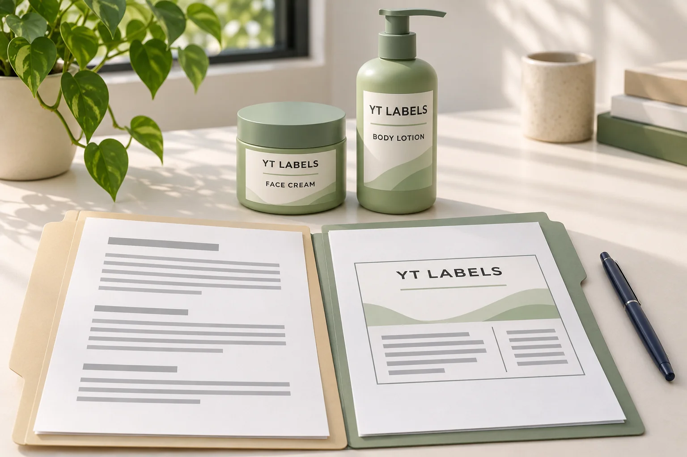
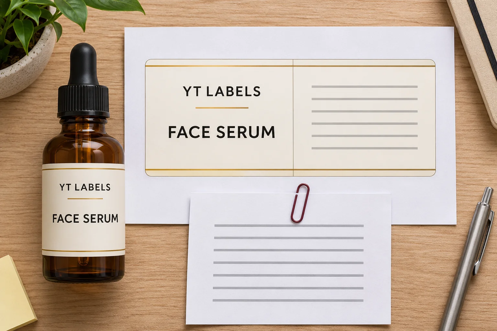

Assign a person who can release the product wording before asking the printer to run the labels. Keep that approval distinct from the printer's production-file review and from physical pack acceptance. A designer can place supplied copy accurately, and a printer can prepare it for output, while the underlying claims, ingredients or market requirements still need a decision from the brand's responsible review process.
For a first skincare launch, “please check the label” can mean several different jobs. Specify whether you need someone to assess product wording, verify that the layout reproduces approved wording, or check that the finished construction can be printed and used. If the expected reviewer has not accepted the job, keep that stage open.

Write down the question each reviewer is answering
The product-copy owner provides the current approved text and identifies unresolved market or product-classification questions for appropriate review. The designer maps that copy into a specific pack layout. The printer identifies production-file requirements and proposed changes for its process. The brand's release owner connects the accepted copy, layout and production instruction to the same revision.
These are suggested workflow roles, not a legal allocation of responsibility. Your company's accountable person and qualified advisers should determine the applicable review and legal obligations. Do not assume that paying for design, printing or a private-label manufacturing service automatically includes every form of labeling assessment.
For a concrete market example, the FDA says it does not pre-approve cosmetic product labeling and places proper labeling responsibility with manufacturers and/or distributors. That guidance is a reason to identify an actual review owner, not to treat a print proof as government approval. Other markets require their own applicable review; this article does not provide a complete labeling-compliance checklist.
Freeze the reviewed text before it enters the print file
Prepare one controlled copy source for each SKU and component. Name the product, text revision, intended market and the status of any unresolved wording. Supply this as an identifiable document rather than as scattered corrections across email, chat and a mockup image.
Ask the designer to identify any wording it cannot fit without a change. Removing a statement, shortening a warning or substituting an ingredient name is a product-copy decision for the responsible reviewer, even if the first problem appears to be limited space. The designer can propose options; the review owner decides what can actually be changed.
If the copy is not final, request a layout discussion with the hold visible. You may be able to review hierarchy and usable space without authorizing production. Before release, reconcile the exact exported layout against the approved copy source. An attractive rendered bottle cannot show whether every required statement was included in the intended panel.

Make each approval answer a specific question
| Review | Identify the input and owner | Record the result |
|---|---|---|
| Product wording | Controlled text, intended markets and the responsible brand review contact. | Accepted text revision, unresolved requirements and any further qualified review needed. |
| Layout against copy | Designer, label component and the exact layout export. | Whether the accepted text is reproduced, including any approved placement or wording changes. |
| Production preparation | Printer's proposed output file and process-specific preparation questions. | Accepted file reference, relevant preparation and any change requiring brand acknowledgment. |
| Order release | Authorized buyer or release owner, accepted references and quantity by design. | Which version may print, remaining holds and who communicates later changes. |
Complete the owner and input fields first. Obtain explicit responses to open questions, then check that all responses identify the same version. If a reviewer only checked spelling, record that narrow scope. If the brand needs a separate regulatory assessment, ask who will supply it rather than expanding a spelling check into one.
For example, a hypothetical cream jar has an accepted front design but an ingredient panel awaiting final brand review. The printer can identify whether the proposed file needs preparation; it should not be asked to infer the missing formula wording. Hold the affected production release until the responsible reviewer provides the accepted copy and its layout is checked.
Keep approval scope attached to later changes
When wording changes, use the copy revision reconciliation guide to locate and check the changed lines. It controls an amendment after the copy source exists. The decision here comes earlier: who is responsible for producing and releasing that source.
Use the proof guide for what a digital view or physical sample can establish. If layout creation itself is missing, define the artwork work package. Hold the order where an approval has no identified scope, a copy question has no responsible reviewer, or the released file differs from the accepted text.
Send a controlled copy and artwork brief
Provide the approved text revision, label layout, container reference and quantities by design. Name the open production-preparation questions and mark any wording still awaiting review. Ask for a label quote and file-preparation response within that scope. The form prepares your message; send copy and artwork through email or WhatsApp.
Prepare a copy handoff inquiry